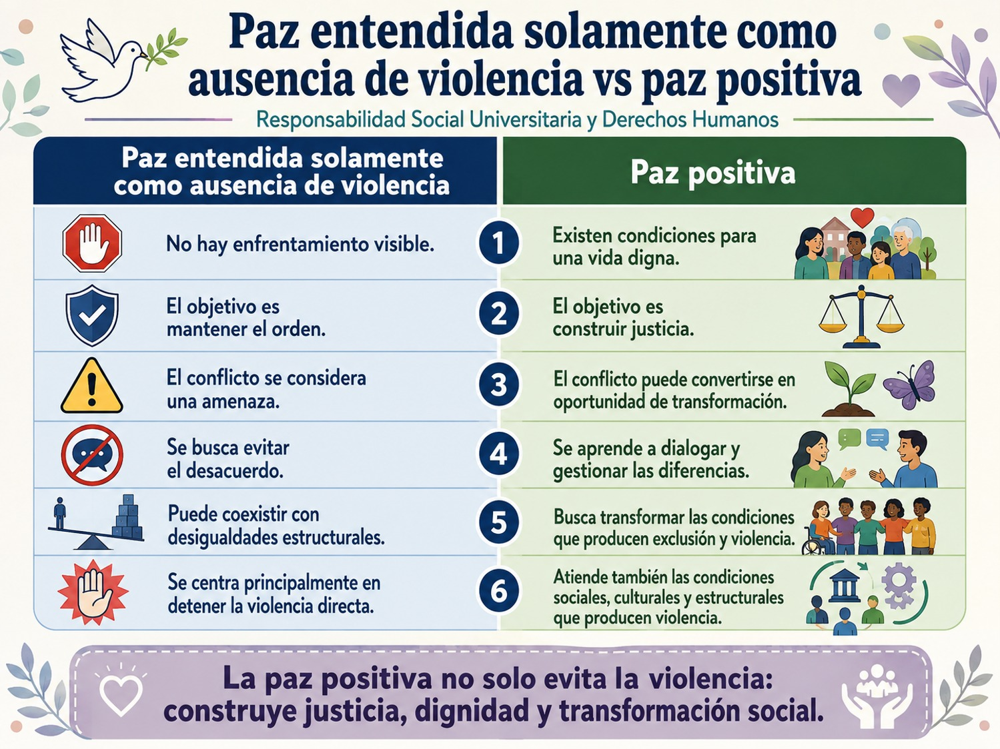
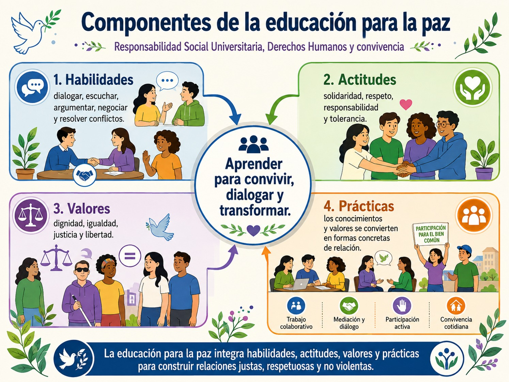
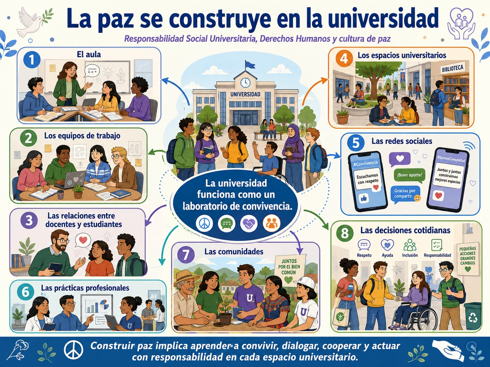

Después de analizar la relación entre los derechos humanos, las funciones sustantivas de la universidad y los principales desafíos que enfrentan México y América Latina, corresponde abordar una dimensión que articula buena parte de lo revisado hasta ahora y es lo concerniente a la educación para la paz.
Cómo viste en la UCA Perspectiva de Género para el Diseño Social, hablar de paz desde la universidad no significa simplemente enseñar a evitar discusiones ni promover relaciones cordiales. Gutiérrez et al. (2015) y Pérez (1998), parten de una concepción mucho más amplia pues como afirman la paz no puede reducirse a la ausencia de guerra o de conflicto, por el contrario, debe comprenderse como un proceso dinámico relacionado con la justicia, la equidad, el respeto a los derechos humanos, la dignidad, la democracia y la posibilidad de que las personas desarrollen plenamente sus capacidades. En este sentido, es importante recuperar una concepción de paz que la vincula con la presencia de justicia y armonía social y con el derecho de las personas a vivir dignamente.
Esta distinción es fundamental porque nos permite diferenciar una situación aparentemente pacífica de una sociedad realmente pacífica. Es decir, una comunidad puede no encontrarse en guerra y, sin embargo, experimentar pobreza extrema, discriminación, racismo, violencia contra las mujeres, exclusión educativa, deterioro ambiental, explotación laboral o imposibilidad de participar en las decisiones colectivas. Desde la perspectiva que estamos retomando, esas condiciones resultan incompatibles con una paz plena porque expresan formas de violencia y vulneración de derechos. Por eso, educar para la paz implica también educar para los derechos humanos.
La paz no es simplemente ausencia de conflicto
Una primera idea que necesitas reconocer es que conflicto y violencia no significan lo mismo. El conflicto forma parte de la vida social puesto que las personas tienen intereses, experiencias, valores, conocimientos y perspectivas diferentes, y estas diferencias pueden generar desacuerdos y tensiones en una familia, una universidad, una comunidad, una organización o una sociedad. Pretender eliminar todos los conflictos no solamente sería imposible, sino que podría conducir a silenciar las diferencias.
La educación para la paz propone, en cambio, aprender a comprender, gestionar y transformar los conflictos sin recurrir a la violencia.
Lugo, Gutiérrez y Saenger (2015), recuperan la perspectiva de Jares, para quien el conflicto puede entenderse de manera creativa, no necesariamente como un problema que debe reprimirse o eliminarse, sino como una situación susceptible de transformación. Entonces, la educación para la paz se construye precisamente desde una concepción de paz positiva y desde una perspectiva creativa del conflicto.
Esto modifica una pregunta habitual. En lugar de preguntar ¿Cómo podemos evitar el conflicto? La educación para la paz propone preguntar ¿Cómo podemos afrontar nuestras diferencias sin recurrir a la violencia, respetando la dignidad y los derechos de todas las personas involucradas? Así, dialogar, escuchar, negociar, argumentar, reconocer al otro y construir acuerdos se convierten en aprendizajes fundamentales.
De la paz negativa a la paz positiva
Podemos comprender mejor esta perspectiva diferenciando dos maneras de concebir la paz, observa la siguiente tabla:

Gloria Ramírez (en Pérez, 1998), plantea justamente que la paz debe vincularse con equidad, justicia, derechos humanos, democracia, desarrollo, respeto a los pueblos y tolerancia. Derechos humanos y paz constituyen dimensiones profundamente interdependientes. Esta perspectiva permite comprender una idea fundamental para este bloque: No puede construirse una cultura de paz donde se vulneran sistemáticamente los derechos humanos.
En este punto es importante preguntarnos ¿Por qué educar para la paz desde la universidad? Como hemos visto las universidades no se encuentran separadas de los problemas de sus sociedades. La violencia, las desigualdades, la discriminación, el individualismo, la intolerancia y la fragmentación del tejido social también atraviesan la experiencia universitaria.
Lugo, Gutiérrez y Saenger (2015), parten precisamente de esta preocupación, pues debemos preguntarnos si las universidades están formando personas fundamentalmente orientadas hacia la competencia individual y el mercado o si, por el contrario, contribuyen también a formar personas capaces de cooperar, comprender al otro y participar responsablemente en la construcción de una sociedad más justa. La pregunta es particularmente relevante para tu formación profesional. Ya que puedes adquirir conocimientos científicos y técnicos excelentes y, sin embargo, utilizarlos de una manera que incremente las desigualdades, excluya a determinados grupos o produzca daños sociales y ambientales. Por eso, la formación universitaria no debería evaluarse exclusivamente preguntando ¿Qué tan competente serás profesionalmente? También debes plantearte: ¿Qué harás con esas competencias y qué consecuencias tendrán tus decisiones sobre otras personas?
Es por ello que, la educación para la paz conecta, por tanto, la competencia profesional con la responsabilidad social.
La universidad como espacio para aprender a vivir con otras y otros
Entre los planteamientos recuperados por Lugo, Gutiérrez y Saenger se encuentran los cuatro aprendizajes propuestos por el Informe Delors: aprender a conocer, aprender a hacer, aprender a vivir juntos y aprender a ser. Particularmente importante para la educación para la paz es aprender a vivir en comunidad, pues supone participar y cooperar con otras personas, reconocer el pluralismo cultural y combatir prejuicios que generan violencia y exclusión.
Es por ello que, en esta casa de estudios procuramos construir un espacio en el que puedas experimentar cotidianamente un espacio de formación como te mostramos en esta imagen:

Esto significa que la educación para la paz no puede enseñarse únicamente mediante una exposición teórica. Es decir, si lo pensamos detenidamente, existe una contradicción evidente cuando una institución habla de democracia pero impide participar; enseña derechos humanos mediante relaciones autoritarias; habla de igualdad mientras tolera discriminaciones o promueve la paz mediante prácticas educativas que silencian el conflicto. Es por ello, que estamos conscientes de que la manera en que aprendemos también educa para la paz -o para la violencia.
La educación para la paz como formación integral
Una de las definiciones recuperadas en el estudio de Lugo, Gutiérrez y Saenger (2015), concibe la educación para la paz como un proceso continuo y dinámico, sustentado en la paz positiva, los derechos humanos, la ética y la solución pacífica de los conflictos. Su propósito es preparar a las personas para analizar críticamente una realidad compleja y buscar alternativas constructivas y no violentas. Esta definición contiene una idea importante: educar para la paz no significa solamente adquirir conocimientos. También busca desarrollar habilidades, actitudes, valores y prácticas. Observa el siguiente diagrama:

Así, la educación para la paz y los derechos humanos busca desarrollar personas reflexivas, críticas, autocríticas y propositivas; promueve cooperación, diálogo, observación e investigación y fortalece actitudes de honestidad, responsabilidad, solidaridad, sensibilidad y tolerancia. En consecuencia, conocer la paz no es suficiente; es necesario aprender a practicarla, sobre todo en nuestra comunidad universitaria.
La educación para la paz es aprender a reconocer al otro
En el volumen coordinado por Pérez (1998), Luis Pérez Aguirre plantea una reflexión particularmente importante: los derechos humanos adquieren sentido cuando dejamos de pensar únicamente en conceptos abstractos y somos capaces de reconocer el rostro concreto de quienes experimentan exclusión, sufrimiento y vulneración de su dignidad. Desde esta perspectiva, educar para la paz implica desarrollar sensibilidad ante las experiencias de otras personas. Por ejemplo, no basta con saber que existe pobreza, debemos ser capaces de preguntarnos por las personas que la experimentan; no basta con estudiar la discriminación, necesitamos comprender qué significa vivir cotidianamente bajo relaciones discriminatorias; no basta con hablar de diversidad, tenemos que aprender a convivir con quienes piensan, viven, hablan, creen o interpretan la realidad de maneras diferentes. De ahí que solidaridad, empatía y reconocimiento no deban entenderse como sentimientos secundarios de la formación universitaria, sino como capacidades necesarias para una convivencia democrática.
Educar para la paz exige comprender críticamente la realidad
La educación para la paz tampoco puede reducirse a enseñar “buenos comportamientos”. Gloria Ramírez (en Pérez, 1998) señala que no puede educarse para la paz sin conocer los orígenes de los conflictos, sus causas y el proceso histórico-político en el que se producen. A este procedimiento se le denomina historización. Esta idea resulta especialmente relevante desde la perspectiva crítica que hemos desarrollado en el bloque. Ante una situación de violencia debemos preguntarnos: ¿qué ocurrió?, pero también ¿por qué ocurrió?, ¿quiénes participan?, pero también ¿qué relaciones de poder existen entre ellos?, ¿cuál fue la manifestación inmediata del conflicto?, pero también ¿qué desigualdades históricas pueden estar detrás?
Por ejemplo, un conflicto territorial no puede comprenderse adecuadamente si únicamente analizamos el enfrentamiento visible entre participantes, también puede ser necesario estudiar propiedad de la tierra, explotación de recursos naturales, desigualdad económica, derechos indígenas, decisiones gubernamentales, intereses empresariales y conocimientos comunitarios sobre el territorio.
Como puedes ver, la educación para la paz es ejercicio de convivencia, una construcción colectiva e histórica, pero también un camino personal ya que la paz es simultáneamente un derecho y un deber. Un derecho porque sólo puede existir plenamente cuando otros derechos han sido satisfechos; y un deber porque exige aprender a encontrarnos con otras personas, reconocer diferencias y convivir con ellas. Esta concepción evita pensar que la construcción de paz pertenece exclusivamente a gobiernos, organismos internacionales o especialistas.
En el siguiente diagrama te mostramos cómo la universidad contribuye a educar para la cultura de paz:

- Gutiérrez, Adriana, Lugo, Elisa y Saenger, Cony (2015). Educación para la paz como derecho humano en universidades públicas mexicanas
- (20) enero. México: RES Revista de Educación Social, 243-258.
- Pérez, Gerardo (Coord.) (1998). Educación, Paz y Derechos Humanos. Ensayos y Experiencias. México: ITESO-Universidad Iberoamericana.
- Kompass, A. (2007). La universidad ante la agenda internacional de los derechos humanos. En Gloria Ramírez, Coord.
- La educación superior en derechos humanos: una contribución a la democracia. México: Cátedra Unesco-FCPyS-UNAM, 101-104
Estos videos te ayudarán a comprender estos conceptos:
Reconocer los principios de la educación para la paz y su relación con los derechos humanos
Ahora revisaremos los principios que están supuestos en la educación para la paz y su relación con los derechos humanos. En principio debemos abordar la concepción de la Paz positiva, que implica ir más allá de la concepción de la paz como simple ausencia de guerra. La paz positiva implica construir condiciones de justicia, equidad y dignidad. La paz existe cuando las personas pueden desarrollar sus capacidades, participar en la sociedad y ejercer efectivamente sus derechos. Como hemos visto anteriormente, los derechos humanos proporcionan condiciones fundamentales para hacer posible esa paz, dicho de otro modo, sin alimentación, educación, salud, participación, libertad o igualdad difícilmente podemos hablar de una paz efectiva.
Otro principio o concepción implícita es la de la Dignidad humana, esto supone que toda educación para la paz parte del reconocimiento del valor de cada persona. Esto, a su vez, implica no instrumentalizar, deshumanizar ni convertir a otras personas en simples medios para alcanzar determinados objetivos. En síntesis, en la educación para paz basada en derechos humanos aparece especialmente el reconocimiento del rostro del otro, es decir, la necesidad de mirar a quienes han sido invisibilizados y comprender que detrás de conceptos como pobreza, exclusión o discriminación existen personas concretas cuya dignidad ha sido vulnerada.
Por su parte, la concepción o principio de Justicia y equidad, también está presente cuando educamos para la paz desde los derechos humanos pues no existe paz sostenible cuando las desigualdades colocan a determinados grupos permanentemente en condiciones de exclusión. Por ello, la educación para la paz debe ayudar a identificar situaciones injustas y desarrollar capacidades para transformarlas.
Mención aparte merece el principio de la No violencia pues la educación para la paz propone rechazar la violencia como mecanismo para resolver diferencias, pero ello no significa pasividad ni renuncia al conflicto, por el contario significa aprender a confrontar situaciones injustas mediante herramientas que respeten la dignidad: diálogo, organización, participación, negociación, argumentación, mediación y acción colectiva no violenta. En este punto es también muy importante que recuerdes que hay distintas formas de violencia -como viste en la UCA de Perspectiva de género para el diseño social- y que no se ejerce solo sobre las mujeres sino sobre las personas vulnerables en diversas situaciones. Es en ese sentido, que educar para la paz desde los derechos humanos implica que reconozcamos que la paz no es solamente la ausencia de violencia física, sino de todas las manifestaciones de violencia.
Esta perspectiva también implica el principio de Transformación creativa del conflicto ya que es muy importante que reconozcas que educar para la paz no significa que el conflicto no debe ser automáticamente considerado negativo o borrado de las relaciones sociales pues, si lo piensas detenidamente, cierto grado de conflicto generado por el desacuerdo entre distintas visiones de la sociedad, es lo que nos hace avanzar en la promoción de ciertas leyes, protocolos y distintas formas de organización que nos permiten avanzar como sociedad. Es por ello que Jares, retomado por Lugo y et al. (2015), propone entenderlo desde una perspectiva creativa, es decir, como una situación que puede transformarse y generar aprendizajes.
En ese sentido, educar para la paz significa aprender a identificar el conflicto, comprender sus causas, reconocer a las partes, escuchar diferentes perspectivas y construir alternativas.
Otro principio presente es el Diálogo y reconocimiento de la diversidad pues éste constituye uno de los principales instrumentos de la cultura de paz. Pero dialogar no significa únicamente hablar, supone escuchar, estar dispuesto a revisar nuestras propias perspectivas y reconocer que otras personas poseen conocimientos y experiencias válidas. Y todo ello está ligado a los derechos humanos a través de la libertad de expresión, participación, diversidad cultural y no discriminación que son condiciones necesarias para un diálogo auténtico.
Por su parte, la concepción de Solidaridad y cooperación también está presente cuando ligamos los derechos humanos con la educación para la paz pues no se puede construir paz desde una concepción individualista. No podemos formar futuros profesionistas con compromiso social desde una perspectiva individualista pues nuestros derechos no pueden ejercerse desconociendo los derechos de las demás personas, es importante tener presente siempre que vivimos en relaciones de interdependencia y corresponsabilidad.
La Participación democrática es también muy importante pues una cultura de paz necesita personas capaces de intervenir en las decisiones que afectan su vida. Por tu parte, el que desarrolles una participación activa en el aula, en tu comunidad universitaria en general y en tu comunidad, contribuye en gran medida a generar una cultura de paz robusta pues todas y todos debemos ser parte de los procesos que nos integran en la vida en común precisamente porque hay otro principio ligado con este y es el que corresponde a la Responsabilidad y corresponsabilidad, es decir, la educación para la paz forma sujetos responsables de las consecuencias de sus decisiones.
Además, educar para la paz también implica el principio de Interculturalidad y respeto a la diferencia, es importante decir que paz no significa eliminar las diferencias para suprimir los conflictos, por el contrario, implica que las reconozcamos y aprendamos a vivir con ellas. Reconocer el pluralismo cultural, sobre todo en nuestro país, es muy importante para combatir los prejuicios raciales que producen violencia y exclusión. Si bien, la declaración de los derechos humanos reconoce que todas las personas iguales, debemos subrayar que la igualdad no exige homogeneidad por el contrario, los derechos humanos deben garantizar que las diferencias culturales, lingüísticas y sociales puedan desarrollarse sin convertirse en motivos de discriminación.
Finalmente, educar para la paz requiere coherencia entre valores y prácticas, eso nos compromete en nuestra comunidad universitaria, docentes, personas del área administrativa y estudiantes a actuar en consecuencia con estos principios desarticulando las relaciones autoritarias o discriminatorias que se puedan llegar a dar en nuestra comunidad. Observa la siguiente tabla a manera de síntesis:

Educar sobre la paz, desde la paz y para la paz
- Podríamos terminar este tema distinguiendo entre tres dimensiones complementarias entre sí:
- • Educar sobre la paz, significa conocer conceptos, derechos humanos, procesos históricos, conflictos y causas de las violencias.
- • Educar desde la paz, significa utilizar metodologías coherentes con los principios que queremos promover: diálogo, participación, cooperación, respeto y reconocimiento de la diversidad.
- • Educar para la paz, significa desarrollar capacidades para intervenir en la realidad, transformar conflictos y contribuir profesional y ciudadanamente a construir condiciones más justas.
Esta última dimensión resulta especialmente importante para nuestra comunidad pues la educación para la paz no puede permanecer en la sensibilización, por ejemplo, una conferencia puede generar reflexión, pero no necesariamente constituye formación suficiente; se requiere una propuesta educativa rigurosa que transite desde la sensibilización hasta la capacitación y la acción.
Para concluir, la relación entre derechos humanos y educación para la paz es inseparable en tanto que los derechos humanos proporcionan el horizonte ético y las condiciones de dignidad, igualdad y justicia necesarias para construir la paz; la educación para la paz desarrolla los conocimientos, habilidades, valores y prácticas que permiten defender esos derechos y transformar los conflictos de manera no violenta.
Ahora te dejamos algunas preguntas para problematizar en tus clases:

- Gutiérrez, Adriana, Lugo, Elisa y Saenger, Cony (2015). Educación para la paz como derecho humano en universidades públicas mexicanas
- (20) enero. México: RES Revista de Educación Social, 243-258.
- Pérez, Gerardo (Coord.) (1998). Educación, Paz y Derechos Humanos. Ensayos y Experiencias. México: ITESO-Universidad Iberoamericana.
Estos videos te ayudarán a comprender los conceptos que vimos: